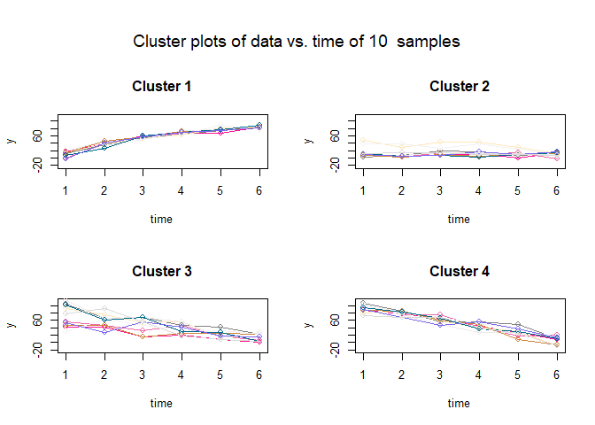

The goal of traj is to implement the three-step procedure proposed by Leffondree et al. (2004) to identify clusters of individual longitudinal trajectories. The procedure involves (1) calculating 24 measures describing the features of the trajectories; (2) using factor analysis to select a subset of the 24 measures and (3) using cluster analysis to identify clusters of trajectories, and classify each individual trajectory in one of the clusters.
Installation
You can install the development version of traj from GitHub with:
# install.packages("devtools")
devtools::install_github("tchouangue/traj")Example
This is a basic example which shows you how to solve a common problem:
library(traj)
# Step 1. Setup data
data = example.data$data
# Step 2. Computing 24 measures of each trajectory
s1 = step1measures(data, ID=TRUE)
#> [1] "Correlation of m5 and m6 : 1"
#> [1] "Correlation of m12 and m13 : 1"
#> [1] "Correlation of m17 and m18 : 0.999"
# Step 3. Factor analysis
s2 = step2factors(s1)
#> [1] "m6 is removed because it is perfectly correlated with m5" "m13 is removed because it is perfectly correlated with m12"
#> [1] "Computing reduced correlation e-values..."
# Step 4. Clustering the trajectories
s3 = step3clusters(s2, nclusters = 4)
plot(s3)